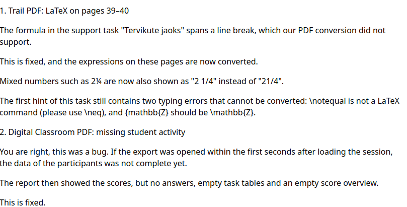

MathCityMapi ekspordist kadusid vastused
MathCityMapi toe sõnul võis Digital Classroomi seansi avamise järel kohe PDF-i eksportides näha punkte, kuigi vastused ja ülesannete tabelid jäid tühjaks. Osalejate andmed alles laadisid.
Raja PDF-i lehekülgedel 39–40 takistas teisendamist valemi reavahetus. Segaarv 2¼ võis paista kujul 21/4. Tugi teatas nende vigade ning ülesande „Elemendid ja hulk“ lahenduse valemite parandamisest. Vihje enda lähtekoodis soovitas tugi asendada \notequal käsuga \neq ning {mathbb{Z} kujuga \mathbb{Z}.
Tugi lubas kolm PDF-i parandust järgmiseks päevaks veebi panna. Uue ekspordi tulemus jäi 12. novembril kasutajal kinnitamata. Sündmuslogis toorandmetena kuvatavad alamülesannete vastused jäid järgmise versiooni lahendada.
